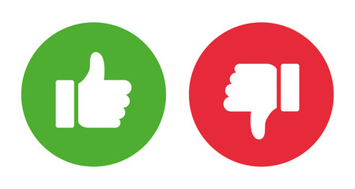

<!DOCTYPE html>
<html>
    <head>
        <title>My experiment</title> 
		<script src="jspsych-6.0.4/jspsych.js"></script>
		<script src="jspsych-6.0.4/plugins/jspsych-html-keyboard-response.js"></script>
		<script src="jspsych-6.0.4/plugins/jspsych-image-keyboard-response.js"></script>
		<link href="jspsych-6.0.4/css/jspsych.css" rel="stylesheet" type="text/css"></link>
    </head>
    <body style="background-color:grey;">
	</body>
	<script>
	
		var timeline = []; 
	
		var welcome = {
			type: "html-keyboard-response", 
			stimulus: "Welcome to the experiment. Press any key to begin."
			};
		timeline.push(welcome);
		
		var instructions = {
			type: "html-keyboard-response",
			stimulus: "<p>In this experiment you will see clouds. Please rate the weather!</p>"+
				"<div style='float: middle;'></img>" +
				"</div>"+
				"<p>Press any key to begin.</p>",
			post_trial_gap:2000
			};
		timeline.push(instructions);
		
		var test_stimuli = [
			{stimulus: "<div style='float:above;'></img></div>"+
				"<div style='float:below;'></img></div>"
				},
			{stimulus: "test_himmel_3.png"},
			{stimulus: "test_himmel_4.png"}];
			
		var fixation = {
			type: 'html-keyboard-response',
			stimulus: '<div style="font-size:60px;">+</div>',
			choices: jsPsych.NO_KEYS,
			trial_duration: 500,
			}

		var test = {
			type: "image-keyboard-response",
			stimulus: jsPsych.timelineVariable('stimulus'),
			choices: ['f', 'j']
			}
			
		var blank = {
			type: 'html-keyboard-response', 
			stimulus: '<div></div>', 
			trial_duration: 500,
			}

		var test_procedure = {
			timeline: [fixation, test, blank],
			timeline_variables: test_stimuli,
			randomize_order: true,
			repetitions: 5
			}

    timeline.push(test_procedure);
		
			
		jsPsych.init({
			timeline:timeline,
			on_finish:function() {
			jspsych.data.dispaly();
			}
		});
			
				
	</script>  
</html>